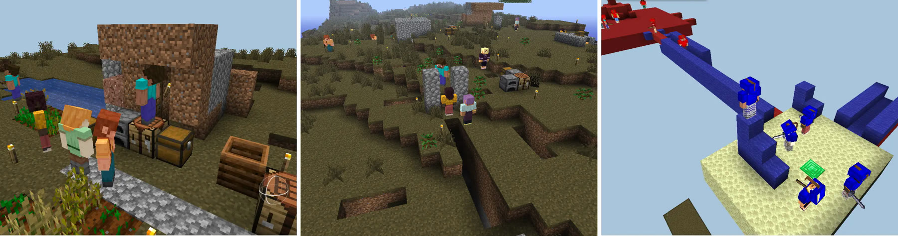

HELLO, HUMAN / LETTER 05
AI가 다음 일을
고를 때
고객의 다음 선택을 돕고, 멈춘 작업을 다시 이어갑니다.
AI가 다음 행동을 정할 때 어떤 기록과 확인이 필요한지 살펴봅니다.
안녕하세요, 헬로우 휴먼 멤버 여러분. 11월의 첫 편지를 보냅니다.
선반을 검색하고 수납함을 저장한 고객에게는 어떤 상품을 추천하면 좋을까요? 작업 도중 멈춘 AI는 어디서부터 다시 시작해야 할까요? 두 상황 모두 지금까지 무슨 일이 있었고, 무엇이 남았는지 알아야 다음 행동을 정할 수 있습니다.
이번 편지에는 고객의 쇼핑을 돕는 추천부터 끊긴 작업을 잇는 도구, 게임 속 AI의 협업까지 모았습니다. 10월 27일부터 11월 2일까지 올라온 새 기사 11편과 새 내용이 더해진 기존 글 3편을 만나보세요. 웹에서 만났던 포자 대청소의 iOS 출시 소식도 담았습니다.
어디서 시작할지 고민이라면
먼저 읽기 좋은 3편
무엇을 하려 할까
선반 검색과 수납함 저장을 ‘주방 정리’라는 하나의 목적으로 묶어봅니다. 가상 쇼핑 화면에서 고객의 선택과 재고 상태를 바꾸며 추천이 어떻게 달라지는지 확인해보세요.
고객의 목적을 읽는 추천 → 작업을 이어 맡긴다면 · 언제 참여하고,어디서 다시 시작할까
LobeHub는 대화에 참여할 때를 판단하고, Paseo 베타는 끊긴 작업을 이어줍니다. 언제 이런 기능이 작동하는지, 끝낸 일을 다시 처리하지 않으려면 무엇을 확인해야 하는지 알아봅니다.
대화 참여와 작업 재개 소식 → 여러 AI와 협업한다면 · 50개가 함께하면더 잘할 수 있을까
Minecraft에서 에이전트들이 역할을 나누고 승인 절차를 만들었습니다. 무엇이 일을 늦췄고, 어떤 절차가 결과를 확인하는 데 도움이 됐는지 따라가 봅니다.
Agents in Games 사례연구 →커머스 인사이트 · 1편
무엇을 봤는지에서, 무엇을 하려는지로
서로 다른 종류의 상품도 같은 일에 필요할 수 있습니다. AI가 추정한 목적을 고객이 바로잡거나, 탐색을 끝냈다고 알릴 수 있게 하는 방법까지 생각해봅니다.
고객의 클릭을 묶어, 진행 중인 쇼핑을 이어주기 →
Pinterest는 행동 기록을 읽어 사용자가 하려는 일을 추정하고, 이를 바탕으로 검색과 알림을 제공합니다. 이 방식에서 힌트를 얻어 쇼핑몰의 ‘이어서 비교하기’ 카드를 제안하고, 추정한 목적과 실제 재고를 각각 확인하는 방법을 짚습니다.
글 속 주방 수납 비교 화면은 헬로우 휴먼의 가상 예시입니다. Pinterest의 공개 사례 ↗를 바탕으로, 쇼핑몰에 적용할 방법을 따로 제안했습니다.
AI 사례연구 · 1편
역할을 나눈 뒤에도, 확인할 일은 남습니다
에이전트가 여럿이면 일을 나눠 할 수 있지만, 서로 조율할 일도 늘어납니다. 게임 속 협업에서 무엇이 발목을 잡았고, 어떤 절차가 도움이 됐는지 봅니다.

에이전트 50개에게 문명을 맡겼더니, 승인 절차가 생겼다 →
YC Labs와 Olam Labs는 Minecraft와 Mindustry에서 여러 에이전트의 협업을 관찰했습니다. 승인 대기로 일이 늦어진 장면과 식량 전달 여부를 확인한 규칙을 비교하며, 업무에 필요한 절차를 가려봅니다.
실험 결과는 제작진의 공개 기록 ↗을 따릅니다. 직접 재현한 결과는 아니며, 실행 환경이 달라 승패만으로 모델의 전반적인 성능을 비교하기는 어렵습니다.
AI뉴스 · 7편
도구가 바뀌어도, 확인할 기준은 남깁니다
모델을 고르고 업무 시스템을 연결하는 방법이 달라지고 있습니다. 새 기능과 함께 실제 이용 규모, 작업이 끝났는지 판단할 기준도 짚어봅니다.
LobeHub는 먼저 참여하고, Paseo는 중단된 작업을 잇습니다 →
LobeHub는 대화에 참여할지 판단한 이유를 남기고, Paseo 0.15 베타는 관리 프로그램이 다시 시작된 뒤 끊긴 작업을 잇습니다. 각 기능이 적용되는 조건을 짚고, 보고서를 중복 저장하지 않는지 확인할 실험을 제안합니다.
OpenAI Evals 읽기 전용 전환, 평가 기준도 함께 옮깁니다 →
공식 일정상 10월 31일부터 읽기 전용인 Evals의 평가 자료와 채점 기준을 Promptfoo로 옮기는 방법입니다. 같은 답변을 다시 채점하는 연습과 함께, OpenAI의 투자 유치 목표 축소 보도와 NVIDIA의 금융 보증 논의도 전합니다.
DoorDash가 밝힌 주문량, 외부 에이전트는 아직 수백 건 →
DoorDash의 발표를 통해 주문 기능을 제공하는 것과 실제로 이용되는 것의 차이를 봅니다. Microsoft가 가상의 조직과 업무 기록으로 Copilot을 평가하는 방법, 바뀐 일정과 담당자를 근거 문서에서 찾는 연습도 담았습니다.
Mistral Large 4 가중치 공개, 이제 직접 운영할 수 있습니다 →
Mistral의 가중치 공개와 Claude의 비용 분석, OpenAI의 행동 감시, Serval·Gemini의 업무 도구 소식입니다. 늦게 들어온 비용 기록을 재시도 내역과 맞춰보는 실험도 제안합니다.
GitHub Copilot Fusion, 작업마다 모델을 고르다 →
작업에 맞는 모델과 실행 방식을 고르는 Fusion, Gemini 4 Carbon의 보안 평가, SAP의 모델 선택과 GitHub 자동화 소식입니다. 가상 이벤트 화면에서는 구매 취소나 중복 출석 기록을 하나씩 넘기며 보상 상태가 어떻게 바뀌는지 볼 수 있습니다.
Oracle·OpenAI, 업무 시스템을 ChatGPT로 연결하다 →
Oracle·OpenAI가 개발 중인 업무 연동과, 업무 데이터의 뜻과 관계를 정리하는 Oracle의 새 기능 계획을 소개합니다. 쿠폰 정책 변경에 맞춰 고칠 API·테스트를 찾는 연습부터 Genie 4와 반도체 공급 계획, 수학 연구의 검증 소식까지 담았습니다.
Entire, 코드 검토를 반복 평가로 바꾸다 →
Entire가 공개한 Git 플랫폼은 코드를 고칠 때마다 여러 에이전트의 검토 결과를 한곳에 모읍니다. Fanatics의 상품 추천, CodeRabbit의 보안 검토, Codex의 장애 조사 사례와 Anthropic의 공시도 함께 전합니다.
속보·단신 · 2편
점수는 어떻게 매겼고, 자료는 어디서 왔을까
모델 평가의 채점 방식과 3D 자료 수집을 둘러싼 의혹을 정리한 두 편입니다.
Artificial Analysis, 지능지수 v5 공개 →
비공개 평가 비중이 60%로 높아지고, 코드 수정과 과학 연구 과제가 추가됐습니다. 순위뿐 아니라 추론 설정과 채점 방식도 확인하며, 내 업무에서 비교해볼 모델을 추리는 방법을 짚습니다.
로블록스 소속 내세운 크롤러, 145.5GB 무단 수집 의혹 →
Open3DLab 운영진이 제기한 3D 자료 수집 의혹과 피해 주장을 정리했습니다. 수집 규모는 운영진의 설명이며, 누가 크롤러를 운영했고 수집 자료를 AI 학습에 썼는지는 확인되지 않았습니다.
AI가이드 · 0편
이번 주 새 글 없음
10월 27일~11월 2일에는 새 가이드가 없었습니다. 이 편지 끝에 준비한 가상 기록으로 이미 끝낸 일과 아직 확인할 일을 나눠볼 수 있습니다.
업데이트한 글 · 3편
지난번 만난 게임과 도시의 다음 이야기
회원 작업물 소개 두 편과 AI 송도 사례연구에 새 내용이 더해졌습니다. 아래 날짜는 각 글의 수정일입니다.
포자 대청소, 이제 iPhone에서도 →
조민하 회원의 퍼즐 게임 ‘포자 대청소’가 iOS 앱으로 출시됐습니다. 소개 글에서 App Store 다운로드 안내와 도시 복원 화면, AI를 활용한 제작 과정을 함께 만나보세요.
GPT-6.1 Terra가 만든 ‘거울나라의 앨리스’ →
모델별 웹 제작 실험에 GPT-6.1 Terra의 결과와 벤치 보고서를 추가했습니다. 같은 주제로 만든 화면을 나란히 보고, 스크롤하거나 버튼을 눌러보세요. 한 번의 제작 결과인 만큼 모델의 전반적인 실력을 판단하는 데는 한계가 있습니다.
AI 송도, 시즌을 넘기며 어떤 기억을 남겼을까 →
제작자가 전한 시즌 2 시작 소식과, 시민들이 시즌 1 막바지에 보존할 기억 수를 줄이는 법에 찬성한 기록을 더했습니다. 비용을 아끼려는 선택이었는지 규칙을 오해한 것인지는 단정하지 않고, 제작자가 시민에게 제공한 정보를 함께 살펴봅니다.